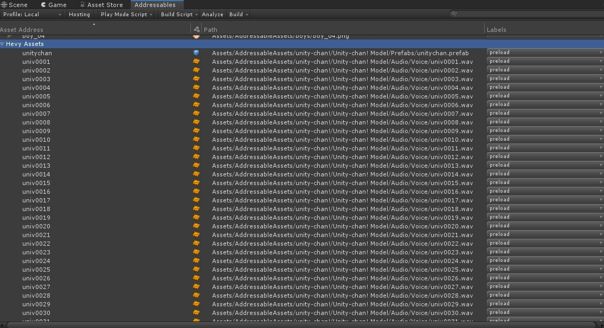
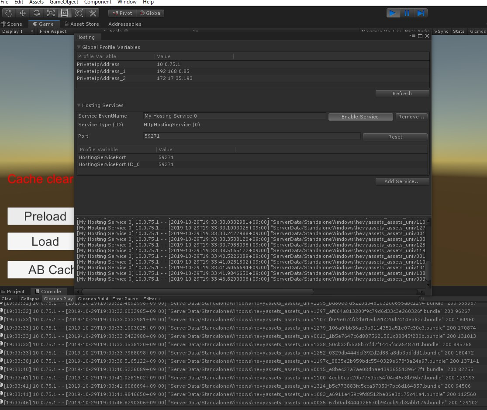
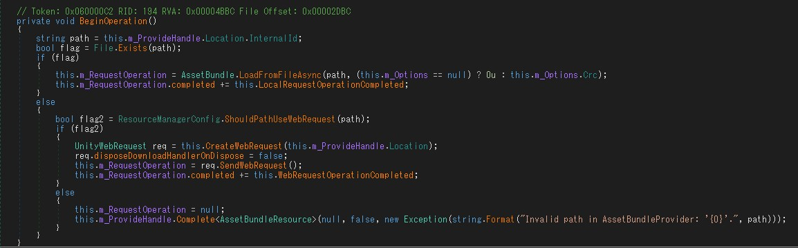

Addressable Assetsで大量のbundleファイルをDownloadDependenciesすると死ぬトラップ
Pack Separatelyを使うときは注意だね😉って話。
基本的にAddressable AssetsはAssets Group単位で.bundleファイルになるが、
Assets GroupのSettingsのBundle Modeで Pack Separately を設定するとAsset単位で
.bundleを生成してくれる。
まとめるか/分けるかは開発時の運用次第だが、まとめるとデータ更新の際に無駄なデータまで更新する必要があるため
1Asset=1ファイルとするAssetBundle運用も結構存在する。
ここでふと気になって実験してみたら、見事に引っかかったのでメモしておく。
結論から言うと、RemoteにあるAssetとDownloadDependenciesとかで全Assetを読み込もうとすると片っ端から
一気にSendWebRequestしてしうまうので、大量すぎるとネットワークが切断されて動かなくなる。

こんな感じのやつをPack Separatelyで1ファイル=1Assetにして
DownloadDependenciesAsync(“preload”)とかすると

こんな感じで一気にSendWebRequestしてConnection Lostしてしまう🤮
多分コード的にはUnityEngine.ResourceManagement.ResourceProvidersのAssetBundleResource
を使ってると思うんだけど、

という風に問答無用でSendWebRequestしちゃってるので詰まって死ぬ。
なのでPack Separatelyしたときはラベル指定でDownloadDependenciesするようなことは避けた方がいい。
ていうか1ロードにせよ、それの依存関係の数とか把握してないのでPack Separately自体が割と危険なので使えないかなあ・・・。
こういうバグは中々発生条件が微妙だったりして気づかない。
まぁ原理的にはPack Separately関係なく発生しうるバグなので根本から直した方がいいんだけど・・・🤔
自分のコードだったらasync/awaitとか使えそうなんだけどこれどうしたものか😅
カスタムできるのかなぁ？